Most of what I do is programming - personal and professional; apps and libraries; open and closed; web and native. Here's a selection of some things you might be interested in.
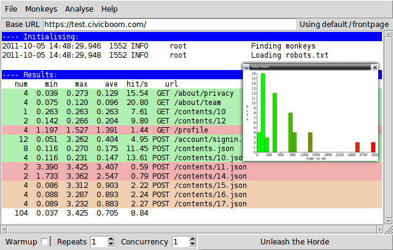
A tool to simulate having many users interacting with a website at once, not just hitting the front page.
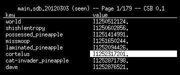
A Curses-based SQL Browser, allowing users to edit database tables like a spreadsheet.
A tool to convert apache logs to a binary format; conversion is much faster than compression, and results are 15% the size of plain text.
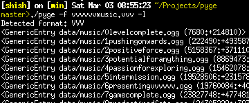
A tool to extract stuff from various game archives; over 20 games supported so far, and adding more formats is easy.
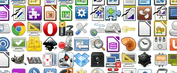
Turn a folder full of images into a single .png sprite sheet with .css file to pick out the individual parts. An open-source Civicboom side-project.
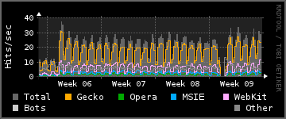
Turns apache (or compatible) log files into RRD files, and from there into graphs of browser use, hits and traffic.
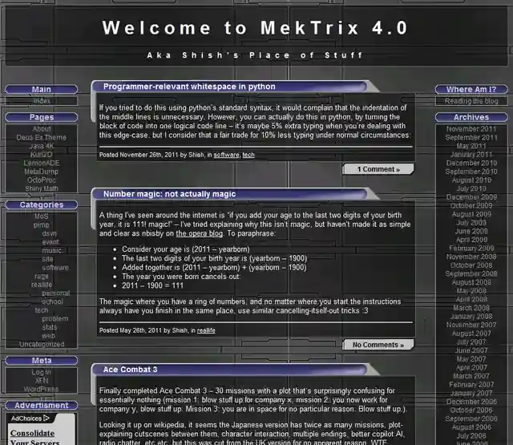
A Deus Ex theme for wordpress, as used on my blog. Most images and graphics © Ion Storm 2000, please don't sue me.
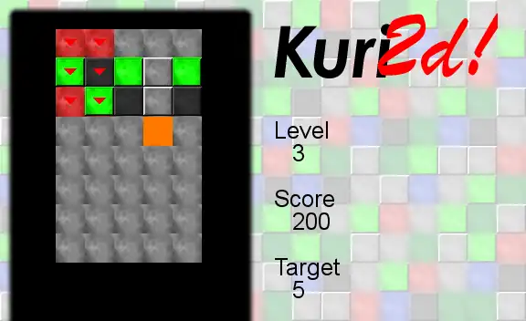
A very simple Kurushi clone in SDL, made to teach myself the C SDL bindings, as well as the now obsolete Autopackage format.
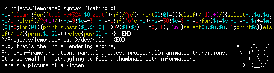
A rather fruity Ascii Demo Engine. For GCSE computing we were told to make a presentation about floating point binary - Seeing as I dislike Powerpoint, I decided to make a flipbook style animation in Notepad. Then, since 'press the PgDn key' is a sucky form of animation, I wrote an animation engine and compressed the whole lot to 1867 bytes. See the results
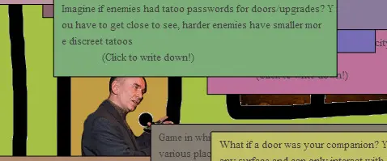
What would it be like, to be Him for a day? A Molyjam 2013 entry.
A simple, functional, unofficial launcher for EVE Online, made after a wave of complaints that the official launcher was getting further and further from what players wanted.
My entry into the Java 4K game competition; trying to squeeze as much fun as possible into a 4096 byte .jar file. It was 2676 bytes with no attempts to shrink the code, just by being a simple game :P
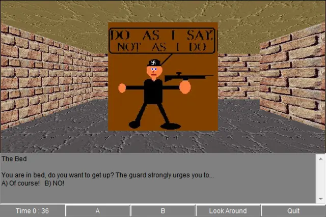
For GCSE Religious Studies lesson we were asked to make a game which would draw attention to an important religious issue. Our game was "Escape From Deathcamp Gugenschluben", which teaches players that nazi deathcamps are unpleasant.
The Boom Rangers' entry into Honda's "Power of Dreams" hack weekend. Takes events from a synthesized engine management system (speed, gear change, etc) and generates appropriate "music". Won the "Best Technology" award. Video
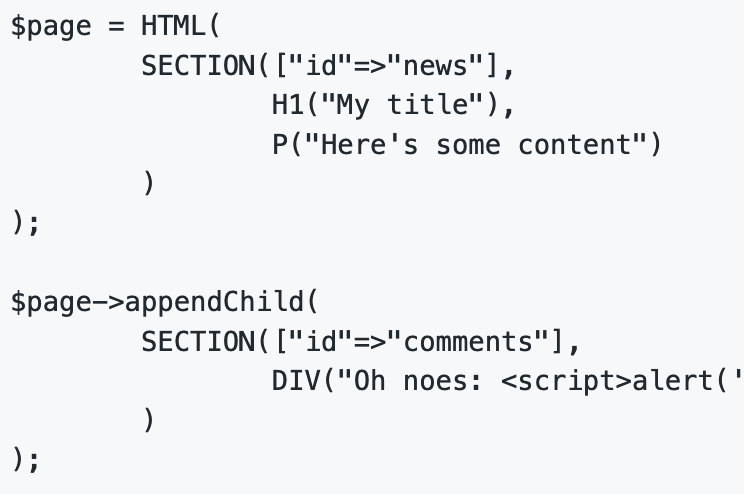
After working with HHVM for a while, one of the things I miss most is XHP...
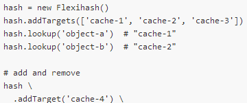
A consistent hashing library, python implementation almost 1:1 compatible with the PHP original.
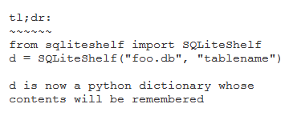
Allows an SQLite database to be used as a python dictionary with persistant storage.
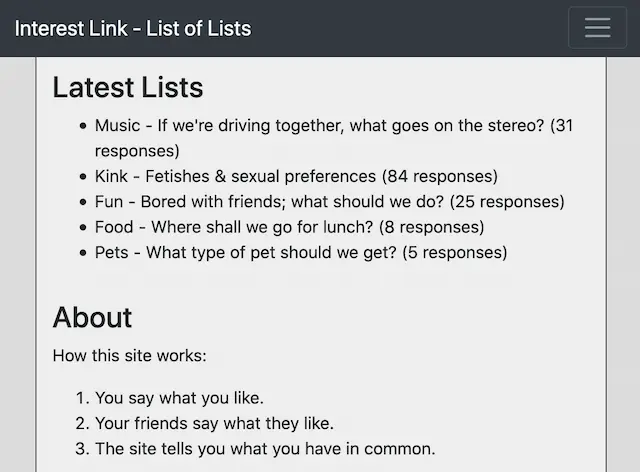
A system for sharing embarassing secrets in relative (not total) confidence.
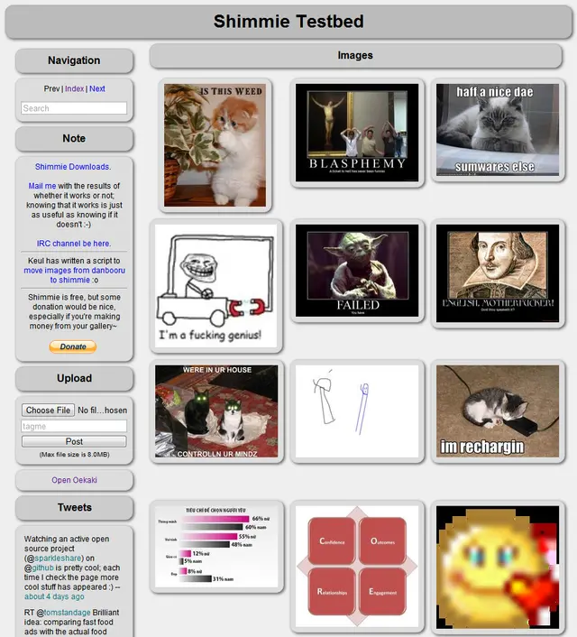
A Danbooru-style image board, designed to be significantly easier to install, run, and extend. Requires a standard LAMP stack as provided by any normal web host. This is probably my most popular project, with a team of 10 coders, hundreds of installations, and thousands of users online at once.
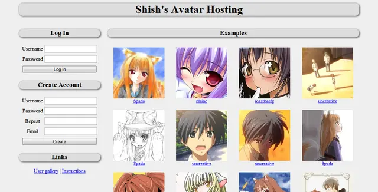
An avatar hosting service that offers up a random avatar from the user's selection each time. Also allows users to turn their avatar collections into Facebook profile page banners.
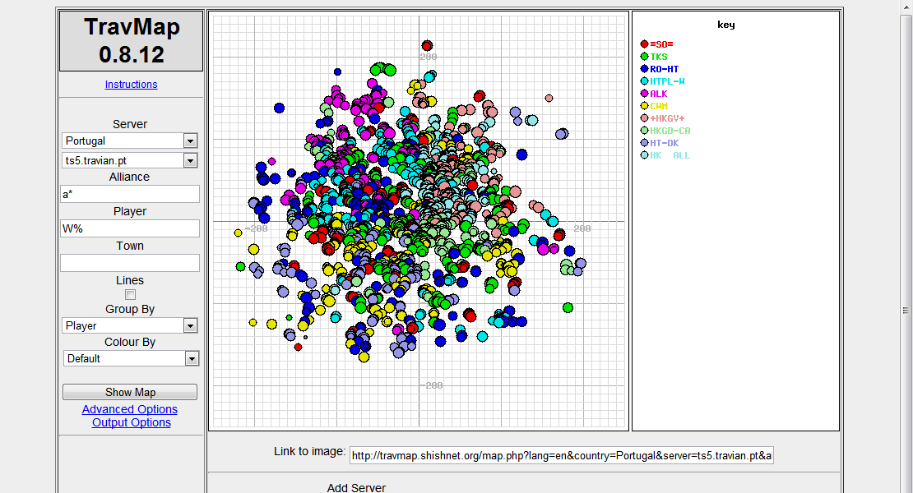
A tool to make maps of various Travian worlds. Mostly untouched since I stopped playing Travian, it's been happily keeping itself up-to-date for seven years.
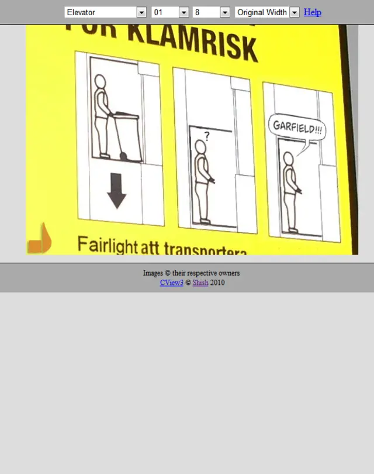
A pure-AJAX comic viewer -- rather than writing any server-side code, I got javascript to parse Apache's built-in directory indexing output. Should work with any web server that can generate directory indexes, and be almost perfectly fast due to the use of static cacheable files.
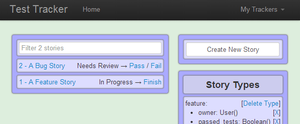
An attempt to make some project management software that isn't completely shit.
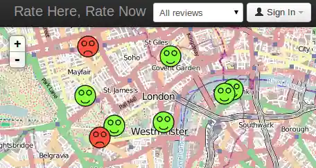
Stick happy or sad faces on a map, so that I can figure out which street to live in.
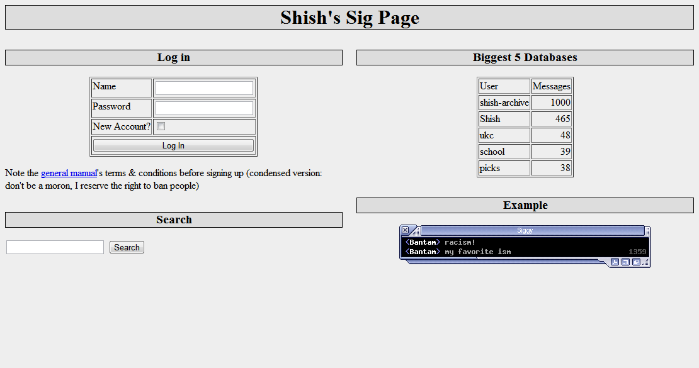
Quotes database with an image output suitable for linking to from a forum signature.
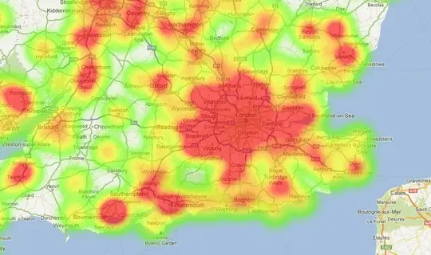
A lot of spreadsheet data, made presentable. From National Hack The Government Day 2013.
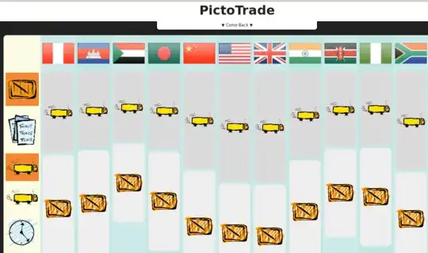
An interactive diagram for exploring international trade factors. From Department for International Development Data Challenge 2012.
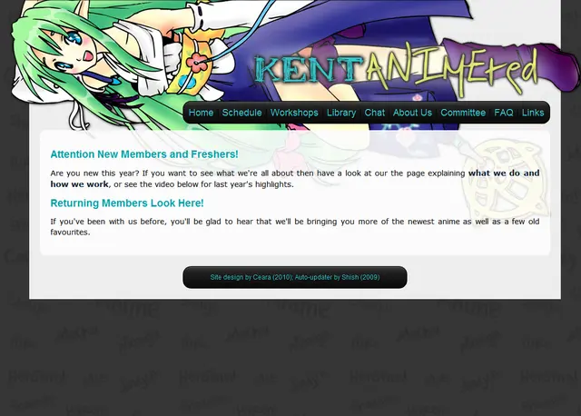
For my university's anime society (The design was already there, I just tidied up the back end, automated it, added iCal support, made it scale nicely from HD monitors to sub-mobile devices, ...).
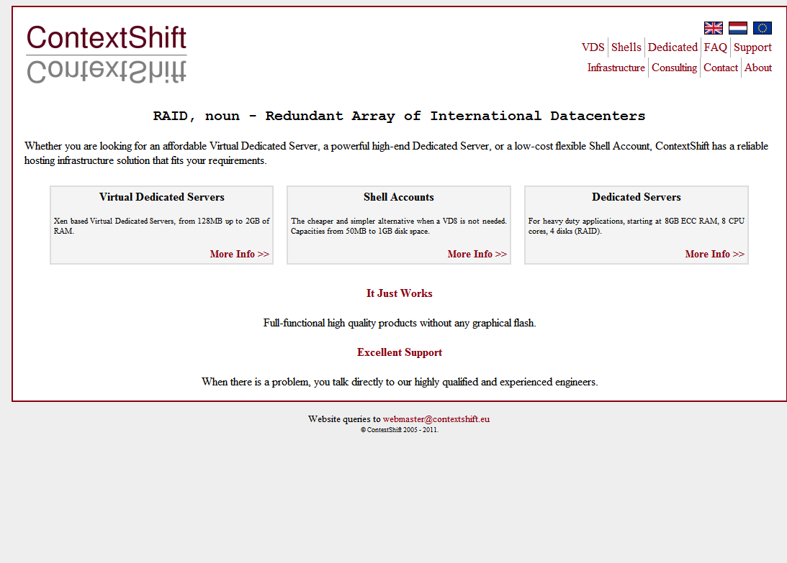
A web / VPS hosting company; a VPS control panel was done in a similar style, but that's only visible to customers.
A website for a travel insurance company, I think this was my first paid programming work ever~
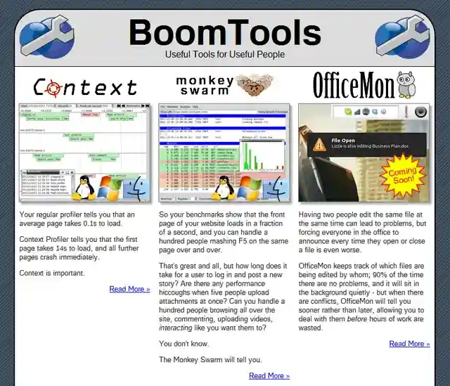
A place to sell Civicboom's side projects
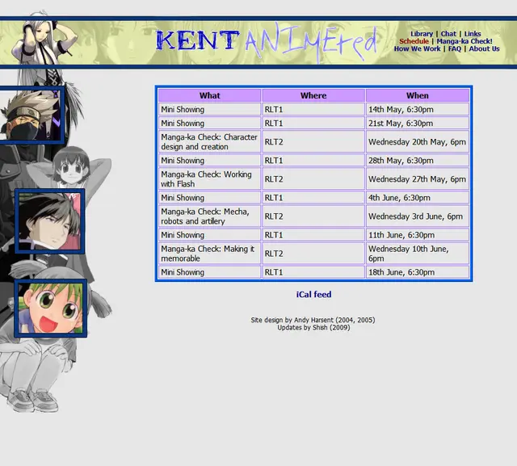
The previous design of the Animesoc website; again my work was behind the scenes.
Some contributions to oldschool mailing-list-based open source projects